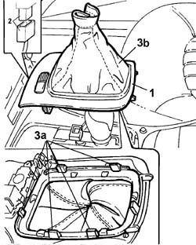
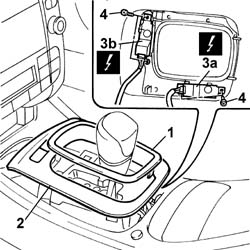

7040L37 GEAR LEVER SURROUNDING TRIM - R.R.
- Path
- Procedures > 70 FITTINGS > 7040 BODY INTERIOR UPHOLSTERY AND TRIM > 7040L PASSGNER COMPARTMENT FLOOR COVERING > 7040L37 GEAR LEVER SURROUNDING TRIM - R.R.
- Kind
- repair procedure (removal / refitting; the operation number is the code)
- Applies to
- all engines; all production periods
- Interactive page
- https://sloeber94.github.io/elrnDB-lThss/en/#/126644
Applies to: engines: 2.0 TB, 2.4 20V, 2.4 JTD 10V, 2.4 JTD 20V; all production periods
 Removing
Removing
 Refitting
Refitting- Open the boot and disconnect the negative battery terminal.
- If necessary, release the non-slip mat from the housing in the tunnel.
1. Release the trim from the housing on the tunnel cover complete with the lever trim.
2. Disconnect the electrical connector for the ASR switch.
3. Working on the tabs (3a), remove the lever trim (3b) from the gear lever surrounding trim.

Applies to: engines: 2.0 TB, 2.4 20V, 2.4 JTD 10V, 2.4 JTD 20V; all production periods
- Undo the bolts fixing the ASR switch to the gear lever surrounding trim.
- Remove the switch
Applies to: engines: 2.0 TB, 2.4 20V, 2.4 JTD 10V, 2.4 JTD 20V; all production periods
Refitting
Removing- Fit the lever trim on the surround.
- Fit the switches in the gear lever surrounding trim tightening the fixing bolts.
- Connect the electrical connectors for the ASR switch.
- Fit the gear lever surrounding trim in the housing in the tunnel cover pressing the retaining trims until they are fastened.
- If it has been removed, position the non-slip mat in the housing on the tunnel.
- Connect the negative battery terminal.
Applies to: engines: 3.0 V6, 3.2 V6; all production periods
Removing
Refitting- Open the boot and disconnect the negative battery terminal.
- If necessary, release the non-slip mat from the housing in the tunnel.
1. Release the trim from the gear lever surround.
2. Release the surrounding trim from the housing in the tunnel cover.
3. Disconnect the electrical connectors for the sun visor (3a) control switch and the ASR switch and the parking sensor belonging to the switch unit on the tunnel (3b).
4. Undo the bolts fixing the switches to the gear lever surrounding trim.
- Remove the switches.

Applies to: engines: 3.0 V6, 3.2 V6; all production periods
Refitting
Removing- Fit the switches in the gear lever surrounding trim tightening the fixing bolts.
- Connect the electrical connectors for the sun blind control switch and the ASR and parking sensor switches.
- Fit the gear lever surrounding trim in the housing in the tunnel cover pressing the retaining trims until they are fastened.
- Fit the trim from the gear lever surround.
- If it has been removed, position the non-slip mat in the housing on the tunnel.
- Connect the negative battery terminal.
Applies to: engines: 2.4 20V; all production periods
Removing
Refitting- Open the boot and disconnect the negative battery terminal.
- If necessary, release the non-slip mat from the housing in the tunnel.
1. Release the trim from the gear lever surround.
2. Release the surrounding trim from the housing in the tunnel cover.
3. Disconnect the electrical connectors for the sun visor (3a) control switch and the ASR switch and the parking sensor belonging to the switch unit on the tunnel (3b).
 | Description | Connector |
|---|---|---|
3a | Controls on tunnel | H036 |
| Description | Connector |
|---|---|---|
3b | Controls on tunnel | H036 |
4. Undo the bolts fixing the switches to the gear lever surrounding trim.
- Remove the switches.
Applies to: engines: 2.4 20V; all production periods
Refitting
Removing- Fit the switches in the gear lever surrounding trim tightening the fixing bolts.
- Connect the electrical connectors for the sun blind control switch and the ASR and parking sensor switches.
| Description | Connector |
|---|---|---|
. | Controls on tunnel | H036 |
| Description | Connector |
|---|---|---|
. | Controls on tunnel | H036 |
- Fit the gear lever surrounding trim in the housing in the tunnel cover pressing the retaining trims until they are fastened.
- Fit the trim from the gear lever surround.
- If it has been removed, position the non-slip mat in the housing on the tunnel.
- Connect the negative battery terminal.
Topics that link to this page (20)
- 2135A10 Automatic transmission control LEVER AND SUPPORT - R.R. and overhaul
- 2135A12 Gear engagement CABLE - R.R.
- 3350E30 General acceleration and slewing SENSOR
- 5010B56 Duct between climate control casing and air duct to rear seats - R.R.
- 5010D27 UPPER MIXED AIR TEMPERATURE SENSOR (one) left or right - R.R. following electrical circuit check
- 5010D28 LOWER MIXED AIR TEMPERATURE SENSOR (one) left or right - R.R. following electrical circuit check
- 5040C10 Air conditioning CASING - R.R.
- 5040D86 air conditioner right air mixture flap control motor - r r
- 5040D94 Air conditioning upper left air distribution flap control motor (DEFROST) - R.R.
- 5040D96 Air conditioning upper right air distribution flap control motor (DEFROST) - R.R.
- 5505C26 ENGINE COMPARTMENT built in wiring - R.R.
- 5505C31 Under-FACIA WIRING - R.R.
- 5505C41 PASSENGER COMPARTMENT built in WIRING - R.R.
- 5580E70 Passive entry system electronic control unit - R.R.
- 7040A10 Instrument facia TRIM - R.R.
- 7040A95 Left or right reinforcement crossmember (one), dashboard and bodyshell supporting crossmember - R.R.
- 7040L17 Passenger compartment front floor carpet - R.R.
- 7040L18 Passenger compartment rear floor carpet - R.R.
- 7040L20 TUNNEL COVER - R.R.
- 7040L28 TRIM for switch holder on tunnel cover - R.R.